Introduction
NillaHedge is a set of analytical tools built on a common database that allow you to keep track of stock, bond, and option holdings, analyze bond and option issues, and explore hedging strategies. Following is a brief introduction to the capabilities of this Pocket-PC application software, starting with an overview of the menu contents.
NillaHedge is not a document-centric application which means upon invocation all you’ll see is the menu. Since there is no document window, the Windows background will still be visible. An ancillary effect of not having document windows is that Switcher-like applications typically only include applications with open document windows in their list of running applications. If you use Switcher or a similar application that makes that assumption, you’ll have to rely on the main Pocket-PC Windows menu to bring NillaHedge back after switching to another application.
The Menus
When you first open NillaHedge, you’ll see the menu at right.
File Menu
 NillaHedge uses a
database to store instrument definitions and portfolio positions that you
create while using it. All instrument
definitions and portfolio positions created are immediately committed to the
database, so there’s no need to save at the end of a session. Just quit.
NillaHedge uses a
database to store instrument definitions and portfolio positions that you
create while using it. All instrument
definitions and portfolio positions created are immediately committed to the
database, so there’s no need to save at the end of a session. Just quit.
Open Database
Given the personal nature of Pocket-PCs, NillaHedge assumes that there is only one user and one database - it opens a database in a default directory upon invocation so you can get right to work. The only time you’ll need to use Open Database is after you have previously closed the database. This menu item is only enabled when the database is currently closed.
Close Database
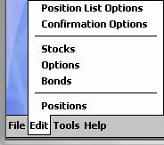
If you can’t choose database directories, you might ask why include Open Database and Close Database at all? The answer is that ActiveSync won’t sync open files and an open database will probably have several files open. Therefore, if you ever want your database backed up, you can use Close Database to close it manually and then reopen it after ActiveSync has finished. This menu item is only enabled when the database is currently open.Edit Menu
The Edit menu is the entry point for creating and subsequently modifying instrument definitions and positions based on those definitions. Supported instruments include stocks, non-callable bonds, and vanilla stock options (i.e. puts and calls). It also provides the entry point to the NillaHedge’s two preferences dialogs. All Edit menu items are always enabled.
Stocks
The Stock Definition Dialog is a structured view of the data that defines a stock to the tools in NillaHedge, including its market price, volatility, and dividends.
Bonds
The Bond Definition Dialog is a structured view of the data that defines a bond to the tools in NillaHedge, including its market price, par value, coupon rate, and dates bracketing coupon payment dates.
Options
The Option Definition Dialog is a structured view of the data that defines a vanilla stock option to the tools in NillaHedge, including its market price, strike price, expiration date, underlying stock symbol, and whether it’s a put or a call option.
Positions
The Positions dialog is your entry point for creating a position in a bond, option, or stock issue. It captures the purchase date, number of units in the position, and the cost of the position. It also captures a ‘Note’ field, allowing you to annotate a transaction number or a source of cash for the transaction, etc.
It also displays any positions previously created for the specified bond, option, or stock issue, including purchase date, number of shares, bonds, or options, the original cost of the position, its current market value, the capital gain (loss), any (dividend or coupon) income that would have been generated since the purchase date, the net gain (capital gain plus income), the annualized yield that the net gain represents, and any note you may have entered when you created the position. If the underlying issue is an option, the income column is replaced by the exercise value of the options in the position.
Position List Options
If you read the previous section on the Positions dialog, you can see that there are quite a few columns of data computed for each position. To manage that complexity within the confines of a small screen, each of the columns in the Positions dialog’s list of defined positions can be made invisible by un-checking the associated check box in the Position List Options dialog. The left column of preferences affects the display of columns in the Positions dialog while the right column of preferences affects the display of columns in the Portfolio Navigator.
Confirmation Options
The Confirmation Options Dialog controls behaviors spanning various dialogs. Two preferences affect behavior within definition dialogs (where you define a bond, a stock, or an option issue), two affect behavior within analyzer dialogs, two affect behavior within the Positions dialog, and one affects behavior within the Option Chain Retriever.[1]
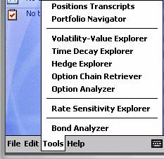
Tools MenuThe Tools menu assembles a variety of tools in one place to accomplish a variety of tasks. Two are analytical, four are graphical, one pulls option prices and other relevant information from the Internet, and two report the current state of your portfolio – one hierarchically, the other as a plain text transcript. Following is a brief introduction to each.
Bond Analyzer
The primary purpose of the Bond Analyzer is to impute bond value given changes in its yield to maturity. Further insight in the form of modified duration and convexity extend the basic analytical outputs (current yield, yield to maturity, and Macaulay duration) that are also present in the Bond Definition Dialog. Of secondary benefit is the separation of the present values of par and coupons, and the ability to discount coupons anywhere within the inception and maturity dates for the bond. This menu item is disabled when there are no bonds defined in the database.
Rate Sensitivity Explorer
The Rate Sensitivity Explorer appears between the Bond Analyzer and the Option Analyzer because it applies to both bonds and options. It provides a graphical view of how the value of bonds, options, and portfolios of either are affected by interest rate changes. This menu item is disabled when there are no bonds or options defined in the database.
Option Analyzer
The Option Analyzer’s primary purpose is to report Black-Scholes value, a half dozen Greeks, elasticity, implied volatility, and the probability of closing in the money. Of secondary importance is the ability to experiment with alternative values of the risk free rate and the underlying stock’s volatility and market price to observe how such changes will affect the option’s market value. This menu item will be disabled if there are no options defined in the database.
Option Chain Retriever
If you can access the internet from your Pocket-PC, the Option Chain Retriever will retrieve current prices, trading volume, and related information for options derived from a given exchange registered stock symbol. The Option Chain Retriever allows you to check current market prices, update the market price of existing option definitions, save new option definitions to the database, and update the market price of the stock underlying the option chain. This menu item is always enabled.
Hedge Explorer
The Hedge Explorer is a graphical tool displaying profit/loss curves for multi-issue positions consisting of up to three options on the same underlying stock, possibly including the stock itself. The Hedge Explorer supports ratio spreads and short positions and allows the user to modify the evaluation date, risk free rate, stock price and volatility. It displays the profit/loss curve for the constituent issues as well as the aggregate profitability. This menu item is disabled when there are no stocks or options defined in the database.
Time Decay Explorer
The Time Decay Explorer is a graphical tool which plots option values versus time. It supports two modes of operation – one completely based on Black-Scholes value, the other incorporating the option’s current market price. This menu item is disabled when there are no options defined in the database.
Volatility-Value Explorer
The Volatility-Value Explorer is a graphical tool which plots relative option value versus relative volatility of the underlying stock. Relative values are simply ratios of prospective volatility or option value divided by the currently stored value for the stock’s volatility or the option’s current Black-Scholes value, respectively. This menu item is disabled when there are no options defined in the database.
Portfolio Navigator
The Portfolio Navigator presents your current portfolio positions in a hierarchical explorer-like navigator, allowing you to drill down to the positions level within a particular stock, bond or option, or abstract upwards in the tree until all you can see are column totals for the entire portfolio. Subtotals are provided at each level in the tree, i.e. the portfolio level, the instrument level (options, stocks, and bonds), the issue level (particular stock, bond, and option issues), and the position level (issues you have a stake in). Background colors distinguish between row types to manage display complexity.[2] This menu item is disabled when there are no positions in the database.
Positions Transcripts
The Positions Transcripts dialog produces a detailed text transcript of all positions closed in a given year or currently open. It’s the textual equivalent of a position level Portfolio Navigator display. It allows you to save the contents of the transcript to a file, thus providing convenient tax time documentation. This menu item is only enabled when there are positions in the database.
Help Menu
The Help Menu currently contains only ‘About box’ information about NillaHedge.
Common Behaviors
This section covers various considerations common across tools in NillaHedge, including the precision with which numbers are stored, slight variations from the Windows’ standard behavior for combo-boxes, and an overview of database behavior and many behaviors common among the three (bond, option, and stock) definition dialogs.
Floating Point Precision in the Database
Many of the edit boxes you’ll encounter in NillaHedge dialogs await and/or display a numerical value. Most of these values are stored with floating point precision (23 magnitude bits in the mantissa and 7 magnitude bits in the exponent), producing the equivalent of 6.9 significant decimal digits. Examples of this level of floating point precision include interest rates, dividend amounts, and volatility.
Market prices, number of shares, options, or bonds in a position, and the total cost of a position are all stored with double precision (52 magnitude bits in the mantissa and 10 magnitude bits in the exponent), producing the equivalent of 15.6 significant decimal digits. When either of these floating point representations is retrieved from the database and presented in a dialog control, it may be formatted with a fixed number of fractional digits, potentially truncating presentation of some of the significant digits. Be assured that the originally entered precision has not been truncated in the database, they’re just not being displayed.
Combo-box variations
In the interest of minimizing pen taps, NillaHedge combo-boxes operate slightly differently from the Windows standard. Suppose you’re using the drop-down portion of the combobox and something in it is currently selected. If you tap somewhere in the dialog outside the drop-down box in a standard Windows application, it cancels the selection. By contrast, NillaHedge accepts the selection.
Instrument Definitions
It is useful to note that once saved, an instrument (stock, bond, or option) definition will be retained in the database forever, so it behooves you to limit the number of definitions you create to those that are actually meaningful. The storage occupied by an instrument definition is quite small, but NillaHedge thinks that each definition is equally significant, so the identifiers for any junk definitions that may creep in will take up rows in the drop-down box when you’re trying to locate a definition later.
Instrument definition dialogs have three things in common. Each one has an edit box for the instruments’ current market price. Each one has an edit box labeled ‘Description’ whose contents serve no other purpose than reminding you that you’ve recalled the definition you thought the symbol represented. Finally, they each contain a symbol (or identifier) by which the database subsequently finds everything associated with that symbol (identifier).
Symbol / Identifier
The Stock Definition Dialog refers to a stock symbol, the Option Definition Dialog refers to an option symbol, and the Bond Definition Dialog refers to a bond identifier. The concepts are identical, but uniqueness is instrument dependent, meaning that you can define a stock, a bond, and an option with the same exact symbol (identifier) and they won’t collide with one another in the database. You may find it confusing, but the database will keep them straight. Any string of characters will suffice as the symbol (identifier) - however, using the generally accepted exchange registered symbol has some benefits discussed in the next section.
The database locates instrument (stock, bond, or option) definitions using the symbol (identifier) you provide in the combo-box located in the top left area of the dialog. This control is always a combo-box, which means it has both edit and drop-down capabilities. You can recall instrument definitions by selecting the symbol (identifier) from the drop-down box, or by entering as few characters as are necessary to distinguish it uniquely from other symbols (identifiers) previously defined for that instrument type and the symbol (identifier) will be auto-completed for you. Whatever capitalization is used when the instrument definition is first saved, defines the symbol’s capitalization forever more, but when you look up a symbol later, capitalization is not considered.
Using an exchange registered symbol (identifier)
You can use any arbitrary symbol in an instrument definition, but there are advantages to using exchange registered symbols. For example, suppose you set up your database using ‘AMAT’ as the symbol for Applied Materials Inc. Later, you use the Option Chain Retriever (in the Tools menu) to download options derived from Applied Materials stock. In the process of fetching option pricing and volume information, the Option Chain Retriever will automatically update the price of Applied Materials stock. The benefit of using the exchange registered symbol is that you can run with the preference to confirm stock price updates disabled (in the Confirmation Options dialog), and let stock price updates sail through without intervention. The default is to let the stock price updates go through without confirmation.
Conversely, if you had used ‘AMAT’ to refer to Amalgamated Mining and Technologies in your database, and you subsequently desire to use the Option Chain Retriever to get the options for ‘AMAT’ (by which the rest of the world refers to Applied Materials Inc), you could potentially overwrite the price of your AMAT with the current market price of Applied Materials. ‘Potentially’ enters the game because you can require that NillaHedge confirm all stock price updates from the Option Chain Retriever by setting a preference in the Confirmation Options dialog, so you have the opportunity to cancel the update if you come to your senses just before the price would get committed to the database. Obviously, this is only a patch on a bad situation - you have forced yourself into manually updating prices for AMAT forever.
A similar situation exists for option symbols. NillaHedge currently does not have a facility for updating bond prices automatically, so the benefits associated with using the generally accepted bond identifier aren’t yet present in this release of NillaHedge (though they may be in a future release).
Saving an Instrument Definition
Suppose that you haven’t modified the default values of the
confirmation options and have just defined an instrument with the symbol
(identifier) ‘INTC’.  When
you click the OK button in the upper right hand corner of the dialog, a
confirmation dialog like the one below will be displayed. Screen space on the PocketPC
is precious and many of the dialogs are packed with controls, so NillaHedge instrument (stock, bond, and option) definition
dialogs all post a small confirmation dialog, asking you to confirm or cancel
saving the changes you’ve made to the definition as a substitute for explicitly
including a Cancel button. When you
initially define an instrument, it may seem superfluous to ask if you really
meant to save the definition, but later when you’re editing a preexisting
definition, the opportunity to cancel the save may prove more useful.
When
you click the OK button in the upper right hand corner of the dialog, a
confirmation dialog like the one below will be displayed. Screen space on the PocketPC
is precious and many of the dialogs are packed with controls, so NillaHedge instrument (stock, bond, and option) definition
dialogs all post a small confirmation dialog, asking you to confirm or cancel
saving the changes you’ve made to the definition as a substitute for explicitly
including a Cancel button. When you
initially define an instrument, it may seem superfluous to ask if you really
meant to save the definition, but later when you’re editing a preexisting
definition, the opportunity to cancel the save may prove more useful.
Confirmation Options
If you’d rather opt out of confirmations like these, you can use the Confirmation Options dialog to uncheck the preference labeled ‘Definition dialogs – close’. When this preference is unchecked, subsequent close events in any of the three instrument definition dialogs will simply update the database without asking permission.
If you’ve already detoured through the Confirmation Options, you may have noticed a preference labeled ‘Definition dialogs – change symbol’. This preference operates similar to ‘Definition dialogs – close’, but is triggered by changing the value of the stock symbol while one or more of the remaining dialog controls shows a value different from the associated values in the database. Naturally, if confirmation is enabled and you’ve never saved an instrument definition with that symbol before, then a confirmation dialog will post no matter what state the controls are in.
Instrument Definition Dialogs
 Stock Definition Dialog
Stock Definition Dialog
The Stock Definition Dialog includes controls for entering a stock symbol, the stock’s volatility, its current market price, a brief description, and a number of controls supporting quarterly dividends.
Stock Symbol
Refer to the Symbol / Identifier discussion in the Instrument Definitions section above.
Volatility
If you never intend to analyze options on a particular stock, then volatility can be ignored because it’s only used to price and analyze options derived from the stock. However, if you are interested in analyzing options on a stock, you should know a couple of things. First, many sources of volatility report the volatility as a percentage, e.g. if the volatility is 0.391, they may report 39.1%. NillaHedge expects volatility to be the un-scaled floating point value, not the percentage. An excellent source for volatility values (reported as percentages) is Robert's Historical Stock Volatilities.[3]
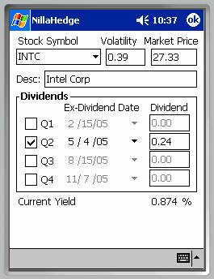
DividendsThe stock price obviously affects the capital value of your portfolio, and dividends are a motive force behind income reporting (elsewhere in NillaHedge). If you’ve done any amount of income investing, you will have discovered that there can be several weeks between the ex-dividend date and the issue date for the dividend check, but NillaHedge only has only one set of dates and uses the ex-dividend date for both purposes.
There are several justifications for this simplification. First, option valuation is driven by the ex-dividend date not the payment date. Second, capturing eight dates associated with dividends would substantially complicate the Stock Definition Dialog and pose a greater data entry burden on the user. Finally, given the limited storage capabilities of the typical PocketPC, storing just four dates instead of eight, saves storage space. The side effect is that the current yield may be affected. It will usually be inconsequential.
You’ll note that the date picker controls in the Stock Definition Dialog can specify years as well as months and the day of the month. NillaHedge assumes that dividends recur annually on the given calendar date, ignoring the year specified. Each of the four dividend date pickers is restricted to the months in the associated calendar quarter. If a stock pays dividends just once per year, in May, the only place you can successfully specify the date is in the date picker immediately to the right of the Q2 checkbox. You’ll also find that the dividend date picker and dividend amount for the Q2 dividend are disabled while the associated quarterly checkbox is not checked. Once you check the checkbox, the date picker and dividend amount controls are enabled. If you later desire to experiment with the effects of discontinuing the dividend, you need only disable the checkbox for the associated dividend and save the modified stock definition back to the database. The ex-dividend date and the dividend amount are retained in the database, but that dividend is excluded from all subsequent income calculations. At the end of the experiment, you can simply re-check the Q2 checkbox and re-save the stock definition.
Current Yield
When a stock price and one or more quarterly dividends are defined, the dialog will report the current yield of the dividends as a percentage of the stock price.
Definition dependencies
Since vanilla put and call options refer to an underlying stock, you may wonder if you must create a stock definition before creating an option definition which refers to it. The answer is no. If a stock definition does not exist at the time that an option definition referring to it is saved, a placeholder stock definition will be created for you. It will be up to you to enter appropriate values for the market price, volatility, dividends, and description, if any. The Stock Definition Dialog is the only place where you can enter a description, dividend dates and amounts for a stock, but the Option Analyzer also allows you to modify the stock price and volatility for an option’s underlying stock. Additionally, the Option Chain Retriever will automatically update the stock price whenever it successfully retrieves an option chain for a particular stock.
Bond Definition Dialog
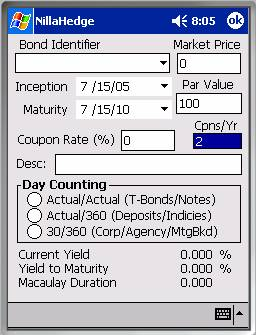
The Bond Definition Dialog operates analogously to the Stock Definition Dialog and is affected by the same preferences that affect database updates in the Stock Definition Dialog. The bond identifier is a combo-box with the same behaviors as the stock symbol combo-box. The Bond Definition Dialog includes controls for entering a bond symbol, the bond’s current market price, its par value, maturity date, coupon rate, number of coupons per year, etc. The Bond Definition Dialog imports the Current Yield, Yield to Maturity, and Macaulay Duration from the Bond Analyzer, but we’ll get to those later.Bond Identifier
Refer to the Symbol / Identifier discussion in the Instrument Definitions section above.
Market Price & Par Value
Market price and par value are currency denominated, single precision values.
Inception & Maturity dates
The bond’s ‘Dated Date’ is called its inception in NillaHedge. The date of a bond’s first coupon is usually half a year after the bond’s inception date (for a ‘normal’ bond paying two coupons per year). NillaHedge calculates coupon dates backwards from the given maturity date. The bond’s maturity date usually coincides with the last coupon date, but in some cases, there may be slight differences between the bond’s official settlement date and the date of its final coupon. To ensure accurate income calculations, you should set the maturity date to the bond’s final coupon date.
Accurate coupon income calculations also depend on the inception date. For NillaHedge the inception date specifies the date before which no coupons are paid, so it need only include the bond’s first coupon date to ensure accurate income accounting. Beware that setting the inception date sufficiently early or the maturity date sufficiently late could infer the existence of ‘ghost’ coupons. NillaHedge will analyze any sort of bond you can define in the dialog, but if you’re interested in accurate accounting, you’ll probably want to avoid bestowing your portfolio with ghost coupons. Even if your mail is delivered by Ghost Riders Express, which frankly, has the world’s ghastliest delivery record, you’ll still face considerable difficulties depositing those ethereal coupons in your local bank.
Only two digits of the inception and maturity date years are displayed, but each date has four significant digits, so you should be careful about just typing over the two visible digits. For example, where 1997 is represented by 97, typing over 97 with 07 will get you 1907, not 2007. You can verify what the control actually contains, by using its drop-down arrow to inspect the full calendar.
Coupons
The annual rate at which a coupon bond produces income is given by the coupon rate. The annual coupon rate is divided among the coupons specified. Each coupon is paid in the amount of the coupon rate times the par value divided by the number of coupons per year. The vast majority of bonds pay coupons twice per year (the default), so a coupon bond with a quoted rate of 8% will have two annual coupons, each amounting to 4% of the par value.
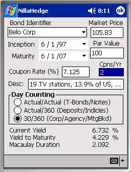
Setting the coupon rate to 0% or setting the number of coupons per year to zero are both effective means of modeling a zero-coupon bond. Conversely, coupon bonds will pay a nonzero percentage of the par value and have at least one coupon per year.
Day Counting
Finally, regarding data entry, a complete bond definition will specify the type of day counting used by the bond. Bonds have a long history, preceding computers and hand calculators. Prior to ubiquitous computing power, accurately computing accrued interest using the actual number of days in a month or year literally represented more computing effort than the extra accuracy was worth, so simplifying conventions crept in, and some are still with us.
Corporate, agency, and mortgage backed securities stuck with the concept that all months have thirty days and daily interest is the quoted annual interest rate divided by 360 - a day counting method called 30/360. Certificates of deposit and various interest rate indexes favor using the actual number of days in each month, but have retained 30/360’s daily rate calculation – a day counting method called Actual/360. Finally, Actual/Actual day counting is most often employed for Treasury bonds and similar notes. Actual/Actual daily interest is the quoted annual rate divided by 365 or 366, depending on whether the day in question is within a normal or a leap year.[4]
Current Yield, Yield to Maturity & Macaulay Duration
Having specified the relevant values above, the current yield, yield-to-maturity, and Macaulay duration are displayed. Current yield expresses the ratio of the coupon amount to the current market value of the bond. Yield to maturity is the interest rate which when applied to the bond’s par value and all of its coupons will result in the current market value of the bond. Macaulay duration remaps a coupon bond’s maturity to where it would be if it were a zero-coupon bond paying with the computed yield-to-maturity.[5]
Option Definition Dialog
The Option Definition Dialog is one of two ways to create an option definition in NillaHedge. The other is to use the Option Chain Retriever to save one of the options displayed in its options list, but we’ll get to that later. To define an option from scratch, you’ll need the option’s symbol, as well as its market price, strike price, expiration date, underlying stock symbol, and of course whether it’s a put or a call.
 Option Symbol
Option Symbol
Refer to the Symbol / Identifier discussion in the Instrument Definitions section.
Automated price updates depend on internet sources which catalogue pricing information using exchange registered symbols. No confirmation option allows you to interfere with option price updates, so it’s imperative that you stick with the exchange registered option symbols.
Market Price & Strike Price
Market price and strike price are currency denominated values.
Expiry
The Expiry date picker captures the option’s expiration date. The vast majority of stock options expire on the third Friday of the month (technically the third Saturday, but the exchanges are closed on Saturdays), so the convention is to say they expire on the third Friday. Be careful to specify the correct date. One could argue that the day of the month in the expiry date is superfluous because options always
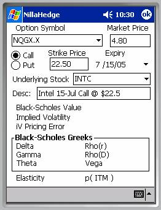
(effectively) expire on the third Friday so you’d be right insofar as exchange registered issues go. However, since the Option Chain Retriever will automatically save exchange traded options directly into the database, including the exact expiration date, we decided to leave exact date flexibility in the Option Definition Dialog. Unfortunately, with that flexibility you also get the burden of accurately specifying the expiry date each time you define an option manually. Sorry about that.Put / Call
The Put / Call radio button pair is technically a
tri-state. It is initialized to an
undefined state, which prevents analysis, forcing you to choose a valid
value. You might ask, why not just pre-
select Call as the default value and save the user from a pen-click, half of
the time? Well, it’s because an invalid
default value forces the user to proactively select a valid value, thus
minimizing the potential of  defining an option with an incorrect Put/Call
value as an oversight.
defining an option with an incorrect Put/Call
value as an oversight.
Underlying Stock
The Underlying Stock is a combo-box control, so you can either type the stock symbol or pick it from a list of stock symbols already defined in the database. If the specified stock doesn’t already exist in the database or it has zero volatility or zero market value, analysis will be disabled, resulting in a display like the one on the previous page.
However, if there is an underlying stock defined in the database with positive market value and positive volatility, the option can be analyzed, producing analytical results like those at right.
All of the analytical information presented below the description field also appears in the Option Analyzer. Please refer to the Glossary and the section on the Option Analyzer to learn more about implied volatility, Black-Scholes value and greeks, elasticity, and the probability of being in the money, p(ITM).
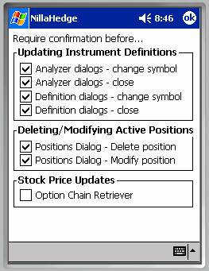
Preferences DialogsThere are two preferences dialogs in NillaHedge, both launched from the Edit menu.
The Confirmation Options dialog allows you to view and modify the current value of seven confirmation options which affect behaviors in the analyzer dialogs, instrument definition dialogs, the Positions Dialog, the Portfolio Navigator, and the Option Chain Retriever.
The Positions List Options dialog allows you to view and modify the visibility of columns in positions lists in the Positions Dialog and the Portfolio Navigator.
Confirmation Options
There are three groups of preferences in the Confirmation Options dialog. Each preference controls whether to require user confirmation before doing something irreversible to the database. The first group controls whether to confirm instrument (bond, option, or stock) definition updates. The second group controls whether to confirm portfolio position modifications and deletions. The third group just controls whether to confirm stock price updates in the Option Chain Retriever.
Dialog Close Events
The second and fourth check boxes indicate your desire to have NillaHedge post a confirmation dialog before updating an instrument definition when you close the dialog. The second check box affects close events in the Bond Analyzer and the Option Analyzer and the fourth check box affects close events in the three instrument definition dialogs. The default value for both preferences is to require confirmation.
Change Symbol Events
The first and third check boxes indicate your desire to have NillaHedge post a confirmation dialog before updating an instrument definition when you change the symbol (identifier) in one of the instrument definition or analyzer dialogs. The first check box regulates change symbol behavior in the Bond Analyzer and Option Analyzer dialogs. The third check box dictates change symbol behavior in the instrument definition dialogs. The default value for both preferences is to require confirmation.
Delete and Modify Events
The preferences in the second group affect whether you’re queried for confirmation after pressing the Delete or Modify buttons in the Positions dialog. Confirming position deletes is probably a good idea, but it’s not a huge tragedy if you don’t confirm modify operations, because you’ll have the opportunity to re-Enter the position before quitting the Positions Dialog, but no warning will post when you close the dialog with values present in the controls above the Enter button. The default value for both preferences is to require confirmation.
Stock Price Updates
The preference in the third group merely puts you in the loop before the stock price can be updated by the Option Chain Retriever. Its default value is false, in the hope that you will wisely use exchange registered stock symbols, making such confirmations superfluous.
Option Price Updates
You might wonder, if there’s a preference for confirming stock price updates in the Option Chain Retriever, why not do the same for option price updates? First, the two types of price update don’t generate the same amount of user interaction. There is only one stock price per ‘Fetch’, so there would never be more than one confirmation posted on its account. In contrast, there might be a half-dozen or more options defined in your database that might need to have their prices updated as a result of a single ‘Fetch’. The criteria used to decide whether to update the option price is that an option definition exists, not whether it would affect your portfolio value (i.e. all definitions will attempt an update, not just those with associated positions).
As a result, it could get really irritating working through all of those confirmation dialogs, so additional logic would be required to manage possibilities like, ‘No, to all’, ‘Yes, to all’, ‘Abort’, etc. All of that complexity to prevent updates to option definitions that might have been defined with an exchange registered symbol, but didn’t represent the issue referred to by the registered symbol. It further requires that you’d recognize that the symbol you used for your special option now collides with an exchange registered option. Ultimately, it seemed unlikely that the same user that would unwisely pick an exchange standard symbol to represent something other than the normally associated option would subsequently recognize that it was being inappropriately updated. In short, we believe that option price update confirmations would probably never get used, so the opportunity to prevent automatic updates is not offered.
We therefore strongly recommended that you stick with exchange registered option symbols to define options that the rest of the world associates with those symbols.
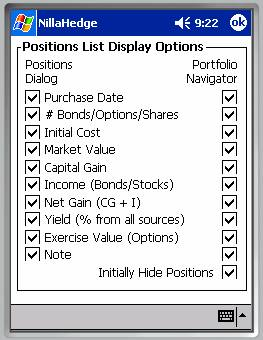
Positions List OptionsPositions List Options are virtually self-explanatory. The preference names correspond with columns in the Positions dialog and the Portfolio Navigator. The preferences in the left column affect the visibility of columns in the Positions dialog and the preferences in the right column affect the visibility of columns in the Portfolio Navigator.
All of the preferences have the default value of enabled (checked), so all columns will be visible in each of the affected dialogs. The columns appear in the same order that they occur in the preferences list at right.
The only preference that doesn’t coincide with a column heading is the very last one on the right – ‘Initially Hide Positions’. The Portfolio Navigator has many row types; the row type at the leaf level in the hierarchy displays a position in a format almost identical to the display used in the Positions dialog.
The justifications for a
default of initially suppressing the display of positions went something like
this. 1) Positions are always displayed
in the Positions dialog. 2) You have the
option of expanding an issue’s summary node to see the positions that
contribute to that subtotal row. 3)
Portfolios would require more scrolling if the positions were visible. 4) It would be quite a bit of work to toggle
all of the issue expansion nodes off, to facilitate fitting more summary
information onto the small screen.
Position Dialogs
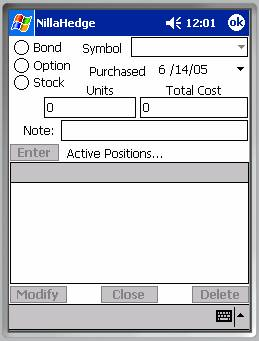
There are three dialogs in NillaHedge that deal with positions, the Positions Dialog, the Portfolio Navigator, and the Positions Transcripts dialog. The Positions Dialog offers the opportunity to view or create the positions linked to a specific stock, option, or bond issue.The Portfolio Navigator provides a top-down view of the entire portfolio, optionally expanding or collapsing branches in the hierarchy down to individual positions at the leaf level.
The Positions Transcripts dialog provides a text transcript equivalent to the leaf level in the Portfolio Navigator. The intent is to export these journal entries for review, tax records, and other documentary purposes.
The Positions Dialog
The Positions Dialog is where all positions in your portfolio are created. NillaHedge tries to anticipate which instrument type you’ll want to create positions for. If you haven’t defined any bonds, options, or stocks, NillaHedge won’t be able to guess an instrument type, so it will initialize the Positions Dialog with the Symbol combo-box disabled and no selected value in the radio button group as shown above.
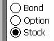
However, if you have defined some instruments, NillaHedge will select an instrument type based on the type you last defined, created a position for, or analyzed. For example, if you just defined a stock, the Positions Dialog will choose Stock in the radio button group and load the known stock symbols into the combo-box.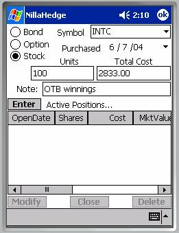
Note that all of the rectangular buttons (Enter, Modify, Close, and Delete) are initially disabled.Bond/Option/Stock Radio Button Group
The Bond/Option/Stock radio button group controls which symbol table is loaded into the Symbol combo-box.
Symbol (Identifier)
When the instrument type radio button group is set to Bond, the symbol combo-box selects bond identifiers. Likewise when the group is set to Option, the symbol combo-box selects option symbols. When the group is set to Stock, the symbol combo-box selects stock symbols.
Note that it’s not necessary to select a symbol from those already defined in the database. If you enter a new symbol, a placeholder instrument definition will be created for you, but it will not make any assumptions about the current market price (e.g. based on the number of units purchased and their total cost). Using zero as the market price in the placeholder definition serves as a reminder that its value has never been set.
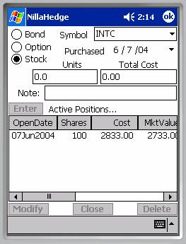
Purchase DateThe current date is used as the default value for the Purchase date, but future dates are disabled, so it’s not possible to enter pro forma positions.
Number of Units (Bonds, Options, Shares)
The number of units (bonds, options, or shares) in a position is stored as a double precision floating point number. While fractions of a bond or an option don’t find much practical application, stock reinvestment plans often produce fractional shares of stock, hence the floating point representation. For short sales, specify the number of units as a negative number. Please note that the unit of measure for an options position is one option, not a contract consisting of 100 options. For example, if you buy 3 option contracts, you would enter 300 in the Units edit-box.
Total Cost
Total Cost is also stored as a double precision floating point value. The presumption is that it represents the cost of the position including
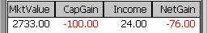
any transaction fees. Note that the cost associated with a short sale should be negative, thus representing an inflow of capital after expenses. As an example, if you chose INTC as the stock
symbol and enter 100 as the number of shares, the dialog calculates and enters
the cost of the position based on the market price of INTC, as currently
defined in the database. No fees are
added at this point (that’s left for you to do manually). We’ll set the date back a year and add $100
to the total cost.
As an example, if you chose INTC as the stock
symbol and enter 100 as the number of shares, the dialog calculates and enters
the cost of the position based on the market price of INTC, as currently
defined in the database. No fees are
added at this point (that’s left for you to do manually). We’ll set the date back a year and add $100
to the total cost.
Note
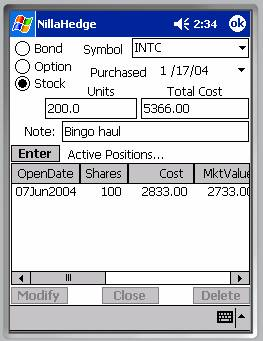
The Note field is provided to document almost anything associated with the position – typically, the position’s source of the funds. We’ll adopt the source of funds convention and call the source ‘OTB winnings’.Enter Button
Once a symbol has been entered and there are values for the number of shares and the total cost, the Enter button will be enabled.[6] As soon as an entry appears in the position list control (below the Enter button), the position has been saved in the database. Closing the dialog only discards the contents of the fields (above the Enter button) used to create a position.
Positions List
The position has been committed to the database and a row is added to the positions list for INTC to depict the current state of the database.
Note that the number of shares and the total cost fields now contain zeroes, the Note field has been cleared and the Enter button has been disabled.
 Since INTC was defined previously with a
market price of 27.33, the market value of the position reflects the number of
shares times the market price of the stock.
If we scroll to the right in the positions list, we can see some of the
remaining columns in the list control.
Since we added $100 to the cost of the position, the Capital Gain shows
a loss of $100. INTC pays a $0.24
dividend once annually, so 100 shares of dividend income is
displayed in the Income column. The Net
Gain column merely sums the Capital Gain and Income column entries and the ‘%
Yield’ column annualizes the Net Gain over the holding period.
Since INTC was defined previously with a
market price of 27.33, the market value of the position reflects the number of
shares times the market price of the stock.
If we scroll to the right in the positions list, we can see some of the
remaining columns in the list control.
Since we added $100 to the cost of the position, the Capital Gain shows
a loss of $100. INTC pays a $0.24
dividend once annually, so 100 shares of dividend income is
displayed in the Income column. The Net
Gain column merely sums the Capital Gain and Income column entries and the ‘%
Yield’ column annualizes the Net Gain over the holding period.
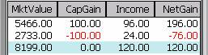
If we scroll to the right, we can see the Note we entered above as our source of funds.
Let’s see what happens when we add another INTC position. We’ll change the date and buy 200 shares for $5366, including transaction fees, and note the purchase as being financed by a haul in a Bingo game.
As before, the Enter button becomes disabled, the Note is
cleared, and  the Units and Total Cost fields are zeroed
out. The Positions List now shows the
following contents:
the Units and Total Cost fields are zeroed
out. The Positions List now shows the
following contents:
The ‘Bingo haul’ position has become the topmost position, showing a positive Net Gain and annualized yield. Obviously, positions need not be limited to outright purchases, they can just as easily be the result of dividend reinvestment.
A Total row, highlighted in cyan, has been added to depict the sums for each of the columns - the exception being the ‘% Yield’ column – this Total row entry is the cost weighted average annualized yield of the contributing positions, so you can get immediate feedback on how well cost averaging is working for you. The total row is only visible when more than one position exists for the issue you’ve selected.
Positions List Columns
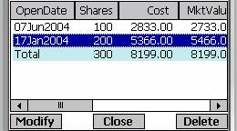
Column headings are generally self explanatory, so we’ll focus on a few things that may not be as readily apparent. First, the list control supports column resizing, reordering, and sorting (toggles between ascending and descending). If a total row is present, it is not included in the sort. Coupon bonds and stocks with dividends generate income, so there’s a column displaying income when the radio button group selects Bond or Stock. The Net Gain column displays the sum of the Capital Gain and Income columns and is also only displayed for bonds and stocks. When the radio button group selects Option, you’ll find another column (assuming its enabled) just to the left of the Note column displaying the exercise value of the position.
You’ll note that the second column (when the Purchase Date and Bonds/Options/Shares preferences are both enabled) changes its name to reflect what sort of units the position represents.
Managing Display of the Positions List
Clearly, you can’t see the contents of all columns without scrolling the Positions List horizontally, but you can disable the display of any of the columns in the Positions List Options dialog, thus reducing the need to scroll horizontally.
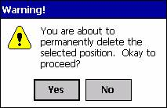
Managing the Contents of the Positions ListThe three buttons below the Positions List allow you to manage the list of positions displayed above. If you select one of the positions in the list, you’ll see the row highlight and the three buttons at the bottom of the screen become enabled. You may notice that you can’t select the total row – it’s not a real position, just a summary entry in the list control.
Here’s what happens when you select one of the three buttons at the bottom of the dialog.
Delete
The Delete button is the simplest of the three. Selecting it causes the message box at right to post over the dialog. [7] If you click ‘Yes’, it will disappear from the database forever. The Delete button is the only one of the three bottom buttons that supports multiple selections.
Modify
The Modify button is very much like the Delete button, in that it warns you that you are about to delete the selected position, and once you select ‘Yes’, the position will be permanently deleted from the database, just as it promised.[8] The difference is that Modify overwrites, without asking permission, all of the fields in the dialog with values taken from the position you are ‘modifying’. Clearly, you shouldn’t use the Modify button if you have typed information into the fields above the Enter button that you care about.
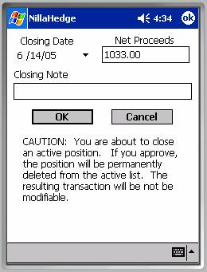
After you complete your modifications, you must re-Enter the position in the database. Until it appears in the Positions List below the Enter button, it’s not saved in the database – that’s why the warning message says “you are about to permanently delete the selected position” when you just selected Modify.Close
The Close button also has irreversible consequences, but it does not have an associated preference in the Confirmation Options Dialog because it needs to capture additional information along with your approval to proceed. The Close Position Dialog completely overlays the Positions Dialog and collects three things from you which enable converting it into a closed position. The date the position was closed, the net proceeds from the sale, and a closing note. The closing date can be no later than the current date. Upon selecting the ‘OK’ button, a ‘closed position’ is created in the database with all of the information previously associated with the active (open) position; the active (open) position is then deleted.
There is no mechanism for modifying a closed position – it can’t be deleted, modified, or converted back into an active (open) position, but you can get transcripts of all closed positions according to the year in which they were closed (see the Positions Transcripts Dialog on the Tools menu).
Portfolio Navigator
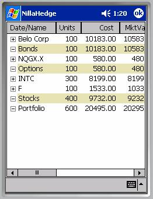
The Portfolio Navigator is the second positions dialog in NillaHedge. It differs from the Positions Dialog in that it doesn’t allow you to close, delete, enter, or modify positions in your portfolio. Its purpose is to display positions and summarize your portfolio at various levels. The hierarchical display implements a folding spreadsheet whose branches can be expanded to obtain more detail or collapsed to a summary. The example at right depicts a portfolio containing positions in one bond (Belo Corp), one option (NQGX.X), and two stocks (F and INTC).Columns
The Portfolio Navigator treats columns slightly differently than the Positions Dialog. Since a typical portfolio will probably involve a mix of instrument types, it’s not possible to eliminate income or exercise value derived columns as it is in the Positions Dialog which only displays positions for one instrument type at a time. So, you get all columns all the time, unless you disabled some of them. For example, if your portfolio just contains options and the income derived columns would always go unused, you can disable visibility preferences for those columns in the Positions List Options dialog.
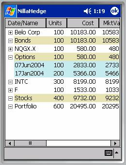
Expanding/Collapsing BranchesIf
you click on theicon next to the symbol (identifier), individual positions
will be displayed above the issue’s summary row. For example, if you expand the INTC branch in
the example above, you’ll get the display at right. Note that detail rows always appear above
their associated summary row, as you might do if you were tallying a subtotal
of positions in each issue. To collapse
a branch, just click on the summary row’s icon.
icon.
Row Highlight Colors
The summary rows for each instrument type are highlighted in manila, symbolizing a manila folder containing information in the constituent detail rows. Position rows are highlighted in powder blue, hopefully alliteration will serve as the mnemonic there.
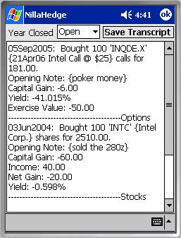
Positions TranscriptsThe Positions Transcripts dialog collects information for all open positions or for all positions closed within a given calendar year and presents a textual report summarizing the activity.
Year Closed
The ‘Year Closed’ combo-box allows you to choose between ‘Open’ and any years for which closed positions exist.
The Transcript
In the example at right, you can see the first two journal entries from the list of open positions. Each entry includes: an opening date, the number of bonds, shares, or options purchased, the symbol of the issue, the description of the issue, the total cost of the position, any note you may have created with the position, and derivative information including capital gain, income, net gain, and the annualized yield represented by the net gain. Totals for cost, capital gain, income, and net gain are posted below the positions listed in the transcript. The cost weighted yield of all positions in the transcript completes the picture.
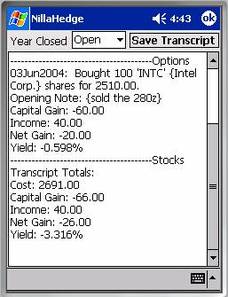
Transcripts of closed positions are almost identical, except they also include the closing date and closing note entered at the time the position was closed. An example appears on the next page.
The transcript created is not saved as a file, unless you do that manually.
Save Transcript
The ‘Save Transcript’ button allows you to save the transcript to a file, for review and editing outside NillaHedge and subsequent upload to a desktop computer. The file dialog posted after clicking the Save Transcript button is shown on the next page, at right.
Database Traversal
The Positions Transcripts dialog traverses the database differently than all other tools in NillaHedge. Most NillaHedge tools access positions through the bond, option, or stock definition, since each tracks its own list of positions.
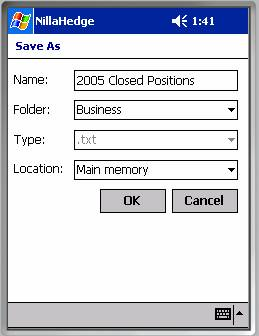
Positions transcripts are generated by bypassing all of the instrument definitions and directly accessing the portfolio positions. This approach has both tactical and strategic advantages. From a tactical perspective, it saves CPU time (something that should always be conserved on a Pocket-PC platform) which might otherwise be wasted inspecting instrument definitions that don’t have associated positions.
From a strategic perspective, directly accessing the portfolio positions enhances robustness by potentially salvaging position information from a partially corrupted database. Hopefully, you’ll never have to find out whether this capability actually saves your bacon or not.
The downside of bypassing the instrument definitions is that positions associated with a particular issue won’t necessarily be contiguous in the transcript. The order in which the journal entries appear is generally the order in which you created the positions, except that space occupied by closed and deleted positions is recycled by subsequently created positions. For example, if you create twenty positions in your portfolio before deleting the second one ever created and then create a new position, the new one will appear second when you generate an open positions transcript. Given the benefits of efficient CPU utilization and the potential to salvage a corrupt database, journal entry disorder was viewed as a reasonable inconvenience. Tax agencies care more about completeness than order, and that’s what the transcript is intended to address.
Option Chain
Retriever
 The
Option Chain Retriever downloads option pricing and related information via the
internet. It captures a chain of options
expiring on a given date and loads up the Option Chain list control, one row
for each option.
The
Option Chain Retriever downloads option pricing and related information via the
internet. It captures a chain of options
expiring on a given date and loads up the Option Chain list control, one row
for each option.
It automatically updates the price of any option in your database found in a downloaded chain, but won’t create any new option definitions automatically. It’s very important to stick with exchange registered option symbols because the price update process doesn’t allow the user disapprove or otherwise bypass price updates.
The Option Chain Retriever will also silently update the price of the underlying stock, unless you set the Confirm Save Preferences to require user confirmation. If confirmation is required, the Option Chain Retriever will post a confirmation dialog before modifying the stock price.
The Option Chain Retriever is initialized with no stock symbol and both buttons disabled.
Stock Symbol
The Stock Symbol is a combo-box, supporting drop-down and edit modes of input. You can either select the symbol for a stock you already have defined in the database via the drop-down box, or use the Input Panel to type a stock symbol not yet in your database. We entered ‘AMAT’ in the example at right. Once a symbol is available, the ‘Fetch’ button becomes enabled.
 Note: There is no local cache of valid stock exchange symbols in NillaHedge - the server is the arbiter of validity for
stock symbols. Since it takes a few
seconds to hear back from the server, you’ll be more productive if you avoid
fetching invalid symbols.
Note: There is no local cache of valid stock exchange symbols in NillaHedge - the server is the arbiter of validity for
stock symbols. Since it takes a few
seconds to hear back from the server, you’ll be more productive if you avoid
fetching invalid symbols.
Fetch Button
 Once
enabled, clicking the Fetch button will initiate a connection with the server
to retrieve an option chain with the earliest possible expiration date for the
company represented by the Stock Symbol.
In the example above, we entered ‘AMAT’ to retrieve the options for
Applied Materials Inc (whose Nasdaq
symbol is ‘AMAT’). The Fetch button is
disabled as soon as the download is launched.
Once
enabled, clicking the Fetch button will initiate a connection with the server
to retrieve an option chain with the earliest possible expiration date for the
company represented by the Stock Symbol.
In the example above, we entered ‘AMAT’ to retrieve the options for
Applied Materials Inc (whose Nasdaq
symbol is ‘AMAT’). The Fetch button is
disabled as soon as the download is launched.
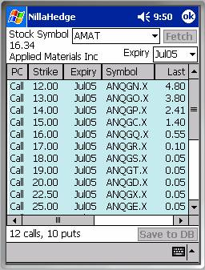
Status MessagesAfter clicking the Fetch button, a series of messages will appear in the status line at the bottom of the dialog (to the left of the ‘Save to DB’ button). The first status message is ‘Opening Request…’ letting you know that progress is underway. Opening a request is a local operation and should complete very quickly. If this message is still around after more than a second, it’s likely that your internet connection is down.
The second status message, ‘Sending Request…’ indicates that NillaHedge is attempting to negotiate a connection with the server. Obtaining an initial connection can sometimes take three to five seconds, depending on the quality of your internet connection and the demand on the server, but once a connection has been established, subsequent requests generally proceed with sub-second elapsed times.
The
third status message, ‘Downloading…’ indicates that a connection has been
successfully established and the data is currently being copied from the server
onto the PocketPC.
Downloading can also experience variations in completion times, from
less than a second to a couple of seconds, depending on the speed and quality
of your  connection.
connection.
The fourth status message, ‘Extracting…’ occurs during the phase where the list control is being populated with the information just retrieved. Here, the total elapsed time is entirely dependent on how fast your processor is and how many options are contained in a single options chain. For a stock with a dozen options, the extracting phase completes almost instantaneously, but it may take a couple of seconds to populate the list control if there are hundreds of options in a single download.
When the extraction phase completes, the status line indicates the number of puts and calls currently contained in the options list; the options list contains a row for each of the options found, the stock price and company name are displayed below ‘Stock Symbol’; and the Expiry combo-box has been loaded with all known expiration dates for options on the specified stock symbol.
Stock Price and Company Name
The first result of extraction is the display of the company name and the current stock price associated with the symbol you requested options for. There’s nothing magical here. The stock price is delayed by about fifteen minutes from the current market. The company name is provided so you can verify that you received what you intended to retrieve.
Expiry Dates
 The
next result of a successful download is that the Expiry combo-box is loaded
with the known expiration months for options on the specified stock. Immediately after download, the Expiry
combo-box displays the nearest term expiration date available. Subsequent expiration dates can be found in
its drop-down box.
The
next result of a successful download is that the Expiry combo-box is loaded
with the known expiration months for options on the specified stock. Immediately after download, the Expiry
combo-box displays the nearest term expiration date available. Subsequent expiration dates can be found in
its drop-down box.
The Expiry combo-box serves two purposes. If you select a date for which you have previously downloaded options, the Expiry combo-box will restore the original sort order (if it has been modified) and scroll the options list so the first option matching the selected expiration date occupies the first row of the options list.
If
you select a date for which you have not previously downloaded options, the
Expiry combo-box will just enable the Fetch button,  enabling
you to retrieve options with that expiration date into the options list.
enabling
you to retrieve options with that expiration date into the options list.
Option Chain List Control
The primary result of extraction is an option chain populating the central list control with columns indicating whether the option is a put or a call; its strike price; expiration month; option symbol; a set of prices (or derivative numbers): Last, Change, Bid, Ask; Volume, and the Opening Interest in the issue.
Highlight Color
Rows in the options list are color coded to indicate whether the option is a put or a call (making the first column redundant). Puts are highlighted in plum, while Calls are highlighted in cyan.
Column Sorting
All of the column headers act as sort buttons on the column. The first click is an ascending sort, the second produces a descending sort. The result of an ascending sort on Strike price is shown at right.
After sorting, it may be desirable to return to the original sort order. Since there’s nothing intrinsic about the option pricing data that would allow a sort on the data that would restore the original order, the original sort order is hidden in the empty column after the Opening Interest column. Its column header button (only about two characters wide) is blank, but it sorts using the list control’s original sort order.
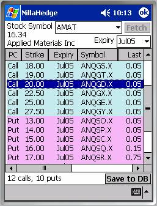
Save to DatabaseThe ‘Save to DB’ Button is enabled whenever one or more rows are selected, even if the selected row doesn’t currently appear within the viewable area, i.e. when you select a row and subsequently scroll the window. You can click, drag, and release to select a screen full at a time, or if you use a real or the builtin soft keyboard, you can use shift-click and control-click to add or subtract rows from the selected list.
When you click ‘Save to DB’, the selected options are immediately saved to the database. Shortly thereafter, the rows will automatically be deselected, indicating completion of the operation. When the rows are deselected, the ‘Save to DB’ button will be disabled too.
The option definitions saved will be complete, even if you haven’t previously defined the underlying stock in your database. But if that is the case, the stock will not have dividends defined and it will have a default value for the stock’s volatility. It’s wise to set dividends to accurate values because they affect the value of options drawn on that underlying, as well as all of the income calculations in the positions dialogs and the positions transcript.
Analytical Tools
The Portfolio Navigator and the Positions Transcripts dialogs were covered in the Positions Dialogs section above - we’ll address the remaining elements of the Tools menu here.
Bond Analyzer
The Bond Analyzer provides a view of the bond’s interest rate sensitivity and allows separation and discounting of associated coupons.
Bond Identifier
The first thing to note about the Bond Analyzer vs. the Bond Definition Dialog is that you can’t create a bond here. Given that, the Bond Analyzer always picks the most recently used bond in your database and displays information for it rather than starting up with no entry in the Bond Identifier combo-box.
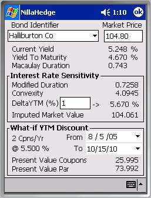
Market PriceThe market price edit box allows you to modify the current market price of the bond and watch how it affects various derived information, such as current yield, yield-to-maturity, Macaulay duration, etc. If, after modifying the market price, you change the symbol or close the dialog, the modified price will be saved to the database.[9]
Current Yield
Current yield expresses the ratio of the coupon amount to the current market value of the bond.
Yield to Maturity
Yield to maturity is the interest rate that produces the current market value of the bond when the par value and all of future coupons are discounted at that rate.
Macaulay Duration
Macaulay duration scales a coupon bond’s maturity to the number of years it would mature in if it were a zero-coupon bond paying the computed yield-to-maturity. Obviously, the duration of a zero coupon bond is the number of years until its maturity. The units are years / currency. Some sources show Macaulay duration as a negative quantity. This is a misconception addressed in the Glossary entry for Macaulay duration. In NillaHedge Macaulay duration is always positive.
Interest Rate Sensitivity box
Modified duration and convexity are the ingredients required to assess the bond’s market price under varying yield conditions. While yield to maturity tells you the yield for a bond priced at a certain level, ‘What-if YTM’ allows you to reverse the process, specifying a yield and obtaining the bond value that it imputes.
Modified Duration
Modified duration rescales Macaulay duration by the periodic yield to show the response that a change in interest rates will force in the bond’s market value.
Convexity
Convexity is the degree of curvature in a bond’s price-yield curve. It makes a second order contribution to the Imputed Market Price. Details are presented in the Glossary.
DeltaYTM
DeltaYTM is a user specified quantity which drives an experimental value of the yield-to-maturity, called What-IfYTM.
What-If YTM
What-If YTM is an unlabeled quantity to the right of DeltaYTM and the static label ‘->’. What‑If YTM is used to compute the Imputed Market Value of the bond. Within the Interest Rate Sensitivity box, it’s also used to discount a calendar range of coupons and the par value to their present values.
Imputed Market Value
The Imputed Market Value displays the market value of the bond imputed by the specified What-if YTM. Other contributing factors naturally include the bond’s par value, maturity, coupons, and current price. The formula for imputed market value is:
|
|
C := convexity D := modified duration P := current market price V := imputed market value y := yield to maturity := ‘What-if YTM’ – y |


What-If YTM Discount box
If you leave the From and To dates at their defaults, this section merely breaks Imputed Market Value into its first order components, with contributions from the present value of the bond’s par value, and from the present value of all future coupons. If convexity is zero, the sum of these present value components will equal the Imputed Market Value. When convexity isn’t zero, you can readily see just how much influence convexity has on the Imputed Market Value. The sum of the par’s present value and the coupons’ present value will not equal the Imputed Market Value - the difference can be attributed to the effect of convexity on bond value.
The Discount box also allows you to choose other From and To dates, so you can assess the present value of coupons from any pair of dates within the bond’s inception and maturity dates. One interesting possibility is to forward discount the coupons that have already been paid. Note that coupons with payment dates before the current time (as your Pocket-PC knows it) contribute more than their face value, not less.
n Cpns/Yr
This static string reminds you how many coupons per year the bond pays, with n replaced by te actual number of coupons per year paid by the bond.
@ d.ddd %
This static string reminds you of the bond’s coupon rate. Obviously, ‘d.ddd’ will be replaced by the appropriate numerical digits.
From Date
The From Date defaults to the current date, but has a valid range from the bond’s inception date to the To Date.
To Date
The To Date defaults to the bond’s maturity date, but has a valid range from the To Date to the bond’s maturity date.
Present Value Coupons
Present Value Coupons collects the present value of all coupons within the specified date range discounted at the What-if YTM rate. Note that it’s possible for coupons that have already been paid to contribute to this sum. Beware that coupons that have already been paid are ‘discounted’ at the complement of the What-if YTM rate, i.e. they contribute more than their face value, not less.
Present Value Par
Present Value Par is exactly analogous to Present Value Coupons, except that it’s impossible for the par value to contribute more than face value because its impossible to set the From or To dates beyond the bond’s maturity date.
Option
Analyzer
The Option Analyzer dialog enables you to experiment with values for the risk free rate, option price, stock price, and stock volatility to better understand an option’s sensitivity to changing market conditions. There is a subtle difference in the way that the Option Symbol combo-box works vs.
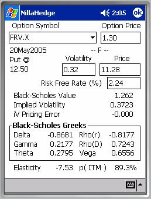
how that control works in the Option Definition Dialog, so we’ll address that immediately.Option Symbol
The Option Symbol combo-box in an analyzer dialog doesn’t allow you to create a new symbol as you can do in the Option Definition Dialog. All you can do is select one of the preexisting option symbols. Given that, we decided to always load the first option symbol found, so you instantly have meaningful output to review when you open the Option Analyzer.
Option Price
The Option Price edit box is a window on the database’s stored value for the option price. If you change the option price here, the new value will be saved in the option definition when you change option symbols or quit the dialog. If you have the appropriate save confirmation preferences enabled, either of those actions will cause a confirmation dialog to post asking permission to update the database.
Expiry Date, Strike, Stock Symbol
Immediately below the Option Symbol combo-box, you can see
several items that summarize the option definition. The expiration date, whether it’s a put or a
call, the strike price, and the symbol of the underlying stock (surrounded by
dashes). In the example above, we can
see that FRV.X is a put option on Ford Motor Co (NYSE symbol = ‘F’), struck at
12.5, expiring on
Volatility
The Stock Volatility edit box is a window on the database’s stored value for the underlying stock’s volatility. If you change the volatility here, the new value will be saved in the stock definition when you change option symbols or quit the dialog. If you have the appropriate save confirmation preferences enabled, either of those actions will cause a confirmation dialog to post asking permission to update the database.
Stock Price
The Stock Price edit box is a window on the database’s stored value for the underlying stock’s market price. If you change the stock price here, the new value will be saved in the stock definition when you change option symbols or quit the dialog. If you have the appropriate save confirmation preferences enabled, either of those actions will cause a confirmation dialog to post asking permission to update the database.
Risk Free Rate
The Risk Free Rate edit box displays the currently stored value for the risk free rate of interest. It’s expressed as a percentage with a default value of 3%. The risk free rate can be computed in the Yield Curve Fitter (a separate tool) or you can set it manually here. It’s a crucial quantity in valuing options, also used in numerous other NillaHedge tools. If you have created option positions and you want a realistic assessment of the value of those positions, you should always review and possibly modify the value of the risk free rate in the Option Analyzer, in one of the Explorer dialogs, or by using the Yield Curve Fitter prior to valuing any option positions.
Black-Scholes Value
The Black-Scholes value is discussed in the Glossary, so we won’t review the details here – it’s an analytical solution to option valuation that accounts for the current price for the underlying stock, its volatility, and the risk free rate of interest. Variations on the theme account for discrete dividends or model dividends as a continuous yield. NillaHedge discounts the stock price with the present value of any dividends rather than resorting to a continuous yield approach. This seems to model market behavior more effectively than the continuous dividend yield model, especially for options with expirations less than one year.
Implied Volatility
Implied volatility is defined in the Glossary, so we won’t delve deeply into it here, but briefly volatility represents the standard deviation of returns on the underlying stock over a year. Volatility is a crucial quantity used to assess option value and because of that role, it can be estimated given the other market conditions, namely the current value of the risk free rate, the current market price of the underlying stock, and the current market price of an option on that underlying stock. Volatility is best estimated using options which are at or near the money and not overly distant from expiration. Options that are far from the money and/or greater than a year from expiry tend to incorporate secondary risks not accounted for in nearer term, nearer the money options. Both situations usually result in pushing the implied volatility higher than stock returns warrant. It’s relatively rare to see a near term volatility higher than longer term volatilities.
iV Pricing Error
Calculating implied volatility is an iterative process, which may fail to converge on a satisfactory solution. The degree to which a solution is satisfactory is given by the pricing error associated with the implied volatility. Ideally, this should be a vanishingly small number, as close to zero as possible. When the implied volatility pricing error is negative, it means that the implied volatility produced a market price lower than the specified market price for the option. Conversely, when iV pricing error is positive, it means that the implied volatility produced a market price above the specified market price.
When the option is ‘rationally’ priced, implied volatility will generally converge and produce little or no pricing error. So pricing error can be an indication that options are incorrectly priced. The only way to know for sure is to look at the relationship between put and call prices at the same strike. The market is correctly pricing options when the following relationship holds: , where C is the Call price, P is the put price, S is the stock price, and K is the common strike price of the put and the call. A deviation from equality is an indication that an arbitrage opportunity exists.
Unfortunately, irrational prices aren’t the only situation that might prevent convergence. When the time to expiry is relatively short and the option is at or near the money (the underlying stock price is very close to the option’s strike price) the volatility surface will be very steep, so implied volatility will have difficulty settling. The implied volatility calculator detects situations involving mispricing and instability and bails out early, indicating the smallest pricing error found among the volatilities tested. It doesn’t communicate why it bailed out, but if expiry isn’t near at hand and the option is not near the money, you should consider the possibility that the current option price represents an arbitrage opportunity. Black-Scholes isn’t a perfect model of market behavior – some researchers have estimated that options prices vs. their associated Black-Scholes value typically differ by 2% or more, but an implied volatility pricing error greater than that should definitely cast doubt on the implied volatility reported. We considered simply clearing the volatility or reporting “~” in these cases and not bothering to report the pricing error at all, but ultimately decided to keep the user in the loop, since the 2% figure itself is somewhat open to debate.
Black-Scholes Greeks
Briefly, the Black-Scholes greeks indicate the option’s sensitivity to changes in the risk free rate (rho(r)), the passage of time (theta), as well as the underlying stock price (delta), dividends (rho(D)), and volatility (vega). Derivative information includes gamma, elasticity, and the probability of closing In-The-Money (p(ITM)). Each of the Black-Scholes greeks and derived quantities are discussed in the Glossary.
Graphical Tools
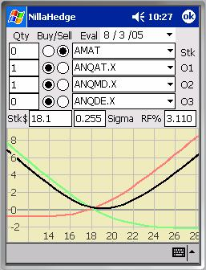
Hedge ExplorerThe Hedge Explorer provides a graphical environment in which option spreads and hedges can be evaluated. The Hedge Explorer supports positions with up to three different options and their underlying stock. The quantity of each issue is user-specified, so the Hedge Explorer inherently supports ‘ratio spreads,’ where the quantities may be other than one.
The Plot
Hedge Explorer plots show stock prices along the X-axis and profit (loss) along the Y-axis. The colors assigned to option symbols are red, green, and blue ordered from topmost symbol to bottom (e.g. VPJAF.X – red, ANQMC.X – green, etc. in the screenshot at right). A stock position will plot in purple. When two or more issues have nonzero quantities, the sum of the positions is displayed in black. The curves are plotted in the following order: red, green, blue, purple, black.
To illustrate, we’ll explore a few
examples. The two options contributing
to the spread above right are (in red) ANQAT.X, an
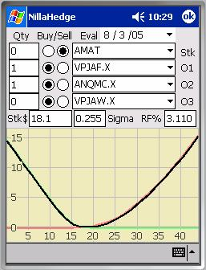
selling for $2.20, so it would cost $300 plus fees to place this bet. This combination of options is known as a vertical (both options expire on the same date) long strangle (nearly a straddle). If AMAT moves up to $22 before much time passes, the position produces a $100 profit, at $27, it turns into a $500 profit.Players on a tight budget might be happier with the spread
at right. The two options contributing
to this spread are (in red) VPJAF.X, a
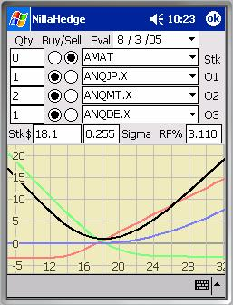
reservations for the short term. It yields ~$240 at $27; AMAT needs to hit $32 to produce a $500 profit. As expiry approaches, much of the lift in the options will have eroded away due to time-decay. You can explore this effect in the Time Decay Explorer or by modifying the evaluation date.If you can flash more cash, you could consider the spread at
left. ANQJP.X is a
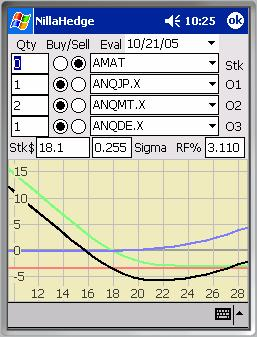
Since this is a calendar spread, it’s useful to consider how
the position behaves when the upside heavy lifter (ANQJP.X) expires. In the screenshot at right, the evaluation
date has been moved up to
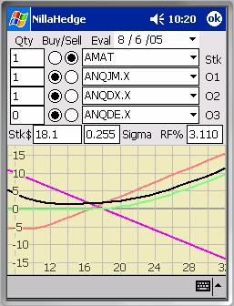
If you have a taste for arbitrage, you could play the options and stock markets against each other. In the screenshot at left, ANQJM.X is aNow that you’ve seen a few ways to find a profitable position in the Hedge Explorer, we can address the operational details.
Stock Symbol (Stk)
The Stock Symbol combo-box (to the left of the label ‘Stk’) allows you to enter or select a stock symbol from a drop-down list. Upon picking a stock, option symbols for that stock are loaded into the option symbol combo-boxes, so you are always selecting options drawn on that underlying. To plot, the Stock Qty must be nonzero and its Buy or Sell button must be selected.
Option Symbols (O1, O2, O3)
Option Symbol combo-boxes allow you to select an option symbol from the drop-down list or type a few letters and let auto-completion find an option symbol for you. To see a plot of an option’s profit (loss) line, the associated Qty must be nonzero and its Buy or Sell button must be selected.
Quantities (Qty)
These edit boxes specify non-negative floating point quantities of the Stock or Option symbol to the right. ‘1’ represents a single share or option, not a block of 100 shares or a contract with 100 options. Don’t get too caught up in the magnitudes - for analytical purposes the ratios between the quantities are more important.
Buy/Sell Buttons
Initially in an undefined state, once selected, the Buy/Sell buttons subsequently act as radio buttons, selecting one, deselects its opposite.
Evaluation Date (Eval Date)
The Eval Date picker drives the time to expiry of the options enabled in the plot. It is initialized to the present date, but you can modify the evaluation date to see how the profit (loss) curves look at other points in time.
Stock Price (Stk$)
The stock price is loaded from the database when a stock symbol is selected, so you can see and modify it. The Hedge Explorer adopts the Confirm Save Preferences of Analyzer Dialogs, so the Hedge Explorer may ask permission before updating the stock’s market price or do so silently, based on the state of ‘Analyzer dialogs – close’ preference.
Volatility (Sigma)
The stock’s volatility is loaded from the database when a stock symbol is selected, so you can see and modify it. The Hedge Explorer adopts the Confirm Save Preferences of Analyzer Dialogs so it will ask permission before updating the stock’s volatility if ‘Analyzer dialogs – close’ preference is checked.
Risk Free Rate (RF%)
The Hedge Explorer loads the currently stored value and displays it as a percentage. Changing the value in the edit box will force a redraw with the new value, but the global risk free rate won’t be updated until the HedgeExplorer closes. At that time, the stored value of the risk free rate is updated silently.
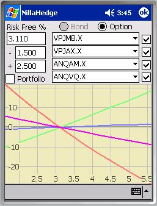
Rate Sensitivity ExplorerThe Rate Sensitivity Explorer provides a graphical view of how bonds and options behave when interest rates change. After gaining some familiarity with the Rate Sensitivity Explorer, you’ll probably discover that call options lose value as the interest rate increases, while put options gain value as rates increase. Bonds normally fall in value as interest rates rise. The relationship between interest rates and value is nonlinear, but over the small (reasonable) interest rate ranges presented in the examples here, the curves are nearly linear, but VPJMB.X has enough rate sensitivity to appear curved at right.
The Plot
For bonds and options, the Y-axis depicts the percentage change in the value of the issue (or portfolio) at each X-value. For bonds, the X-axis depicts prospective changes in each issue’s yield to maturity, so the bond’s current yield to maturity is represented by the 0 point, so all curves will pass through (0,0). For options, the X-axis of depicts prospective risk free rates of interest, so all curves will pass through (rfr, 0). The colors assigned to the curves are red, green, blue, and purple ordered from topmost symbol to bottom, e.g. VPJMB.X – red, VPJAX.X – green, etc. as shown in the screenshot at right.
Plot Enabling Checkboxes
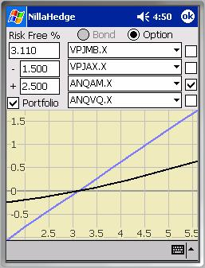
The four checkboxes on the right side of the dialog control whether the option symbol currently displayed in the adjacent combo-box will be plotted below. In the example at right, VPJMB.X, VPJAX.X, and ANQVQ.X are disabled, so only ANQAM.X (blue) and the option portfolio will be plotted.Portfolio
Positions must exist in the portfolio for the Portfolio checkbox to be enabled. When enabled and the checkbox is checked, an additional curve is plotted (black), representing the rate sensitivity of all bond or option positions in the portfolio. Issues in the portfolio with positions are each weighted by the cost of those positions relative to the cost of the entire bond or option portfolio.
In the second example on the previous page, the interest rate sensitivity of the portfolio is relatively low, so the most rate sensitive issues (VPJMB.X, VPJAX.X, and ANQVQ.X) were disabled to get a better view of the option portfolio’s rate sensitivity.
Bond/Option Radio Buttons
Bond/Option definitions must exist before the Bond/Option radio button will be enabled. The radio buttons switch the Rate Sensitivity Explorer between plotting rate sensitivity for bonds
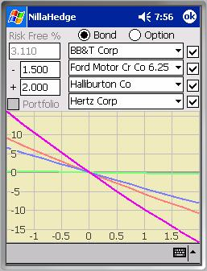
or options. The state of the dialog is stored when the buttons switch from Bond (Option) to Option (Bond) and is restored in the reverse direction.Risk Free Rate
The Risk Free Rate edit box displays the currently stored value for the risk free rate. It’s expressed as a percentage with a default value of 3%.
‘-‘ Edit Box
The ‘-‘ edit box specifies how far below the current risk free rate (for options) or yield to maturity (for bonds) to set the low X-value in the plot. When the radio buttons are in Option mode, this value cannot exceed the risk free rate. When the radio buttons are in Bond mode, this restriction is lifted, allowing bonds to have negative yield to maturity.
‘+’ Edit Box
The ‘+’ edit box specifies how far above the current risk free rate (for options) or yield to maturity (for bonds) to set the high X-value in the plot.
Time Decay Explorer
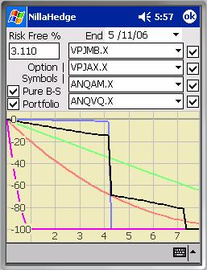
The Time Decay Explorer provides a graphical view of the relative rate with which option values decay as the expiration date approaches. As can be seen in the plot at right, options exhibit a wide variety of decay behaviors, from near linear (VPJAX.X) or whipsaw (VPJMB.X) style gradual decay to a cliff-like drop (ANQAM.X) on the expiration date. Note, for performance reasons, the Time Decay Explorer always uses a continuous dividend yield Black-Scholes model, not the present-value of dividends model used elsewhere in NillaHedge.The Plot
Time-decay plots depict time in months along the X‑axis and percent change in option value along the Y‑axis.
The colors assigned to option symbols are red, green, blue, and purple ordered from topmost symbol to bottom (e.g. VPJMB.X – red, VPJAX.X – green, etc.). When option positions exist in the database, the Portfolio checkbox will be enabled. If enabled and Portfolio is checked, a black line depicts the volatility-value curve for option positions in the portfolio with each option’s contribution weighted by the cost of the associated positions.
There is one point worth noting regarding time-decay plots. First, as you can see, time-decay curves can be discontinuous, i.e. exhibit sharp vertical drops, just as the portfolio and ANQAM.X each demonstrate here. In an attempt to make plotting these curves acceptably fast, the options and portfolio are not evaluated at every single visible point, but at discrete intervals across the X‑axis. One pixel of horizontal displacement is unavoidable, so a curve that would appear as a nearly perfect vertical drop if all the points were plotted, will appear to have a sharp slope instead. Such approximations to the vertical impute no information whatsoever about the actual time-decay of the issue or portfolio at the intervening X‑values; the Y‑values at the rightmost point before the cliff and at the leftmost point after falling off the cliff are accurate, but in between the curve is merely an instrument of convenience, providing visual continuity across the plot.
Plot Enabling Checkboxes
The checkboxes on the right side of the dialog enable/disable plotting the time-decay of the option symbol immediately at its left.
Portfolio
The Portfolio check box enables you to see how your entire option portfolio is positioned with respect to time decay. The Time Decay Explorer plots a polyline which sums all option positions in your portfolio, each option’s contribution weighted by the cost of its positions relative to the total cost of all option positions in the portfolio. The portfolio decay profile shown at right (in black) consists of two option positions with different expiration dates, though neither option’s symbol is currently selected in any of the option symbol combo-boxes, though one option does share an expiration date with ANQAM.X (blue).
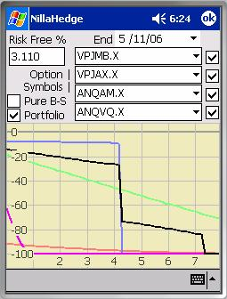
Pure Black-Scholes modeY‑values on the plot represent percentages of the
option’s reference value, given by  , where bsv represents the Black-Scholes
value at a given point in time and rv is a reference value which can be either the Black-Scholes value on the current date or the option’s currently
stored market price, based on the state of the Pure B-S checkbox. When Pure B-S is checked, rv is the
option’s reference value; when it’s unchecked, the stored market price is used
for rv.
, where bsv represents the Black-Scholes
value at a given point in time and rv is a reference value which can be either the Black-Scholes value on the current date or the option’s currently
stored market price, based on the state of the Pure B-S checkbox. When Pure B-S is checked, rv is the
option’s reference value; when it’s unchecked, the stored market price is used
for rv.
The first screenshot (previous page) shows a Pure B-S mode plot. You’ll note that all options start at time 0 with a 0% displacement from the reference value and ultimately finish at -100% of the reference value.
In market price mode (Pure B-S is unchecked) the ‘curves’ may start above or below 0% but they’ll all finish at ‑100% since as . Options whose currently stored market price exceeds the current Black-Scholes value will start off showing a ‘loss’ (below 0%); options whose initial Black-Scholes value exceeds the currently stored market price will start off with a ‘profit’ (above 0%). Either way, the option or portfolio will decay in value from that initial point. Remember all options for a given underlying stock are evaluated using the stock’s currently stored volatility. Since option value increases with volatility, if the stored volatility is close to the implied volatilities for the near-the-money options, the far-from-the-money options will appear undervalued (therefore starting off with a ‘loss’ as VPJMB.X does here) and vice-versa.
End Date
The End Date picker defaults to twelve months from the current date, but can be set earlier or later to zoom the X-axis in or out, respectively. A ‘practical’ range of 2 months to 4 years from the current date is enforced.
Risk Free Rate
The Risk Free Rate edit box displays the currently stored value for the risk free rate. It’s expressed as a percentage with a default value of 3%.
Time-Decay as a Risk Factor
Options obviously decay in value over time - some gradually, others abruptly. It therefore behooves you to be aware of how your options portfolio behaves so you will not be caught unaware when a precipitous change in value is imminent. Secondarily, switching between Pure B-S and market price mode can shed light on disparities between theoretical and market value. In the plot on the previous page, VPJMB.X appears to have a market price which represents a severe premium with respect to its theoretical value. How can the market and the theoretical values be so far off? Temporarily discounting market inefficiencies or possibly unrealistic expectations on the part of contract writers, the volatility smile is generally the culprit.
The VPJMB.X case will be discussed in the section on Volatility Risk below, so we’ll forego getting into a detailed rationalization here. Suffice it to say that: 1) significant changes in volatility can have a dramatic (non-linear) influence on option value; and 2) the implied volatility of VPJMB.X is roughly 50% higher than the volatility stored in the database when the selected AMAT options were evaluated above. As you’ll see below, a 50% ‘error’ in AMAT’s volatility can effect a 15x change in VPJMB.X’s theoretical value.
Volatility-Value
Explorer
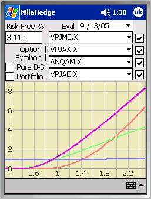
The Volatility-Value Explorer provides a graphical view of the relative sensitivity of options to their underlying stock’s volatility. Up to four options can be compared simultaneously. The Volatility-Value Explorer has two modes of operation (really just ways to scale the Y-values), pure Black-Scholes and market price relative. In pure Black-Scholes mode, the option’s current market price is ignored - only the risk free rate and the underlying stock’s price and volatility influence the plots. When the Pure B-S check box is unchecked, the option’s last known market price becomes the reference against which imputed option prices are scaled.The Plot
The first thing to remember about volatility-value plots is that both axes depict ratios, not volatilities, option value, or percentages thereof. The horizontal axis depicts the ratio of experimental volatility to the current volatility for the option’s underlying stock, so represents the currently stored volatility for the underlying stock. The vertical axis similarly depicts the ratio of the imputed Black-Scholes value to the option’s last known market price or its Black-Scholes value (depending on the state of the Pure B-S checkbox), so represents the option’s relative value at a given relative volatility.

The colors assigned to option symbols are red, green, blue, and purple ordered from topmost symbol to bottom (e.g. VPJMB.X – red, VPJAX.X – green, etc.). When option positions exist in the database, the Portfolio checkbox will be enabled. When checked, a black line depicts the volatility-value curve for the current option portfolio with each option’s contribution weighted by the cost of the associated positions (refer to the screenshot on the next page).
Plot Enabling Checkboxes
The checkboxes on the right side of the dialog enable/disable plotting the volatility-value for the option symbol immediately at its left. When options produce very high value-volatility ratios while others are less responsive, it can be difficult to assess the behavior of the low ratio options. However, if you disable (uncheck) the high ratio options, the plot will re-scale to provide more insight into the low ratio options’ behavior. Refer to the second plot on the previous page.
Pure Black-Scholes mode
When Pure B-S is checked, the plot represents the imputed option value divided by the Black-Scholes value at the reference (underlying
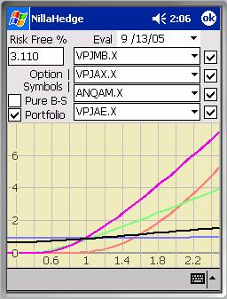
stock’s stored) volatility, consequently the volatility-value curves all pass through . In market price mode (Pure B-S is unchecked), the Y-values in the plot represent the imputed option values divided by the option’s stored market price, so the volatility-value curve can pass above or below .All things being equal, a premium option, whose currently stored market price exceeds its Black-Scholes value at the currently stored volatility, will pass below as VPJMB.X (red) does in the screenshot at right. Conversely, a bargain option, whose Black-Scholes value at the currently stored volatility is greater than the option’s currently stored market price will pass above as VPJAE.X (purple) does.
Portfolio
The Portfolio check box enables you to see how your entire option portfolio is positioned with respect to volatility risk relative to the currently stored volatility for the underlying stock. The Volatility-Value Explorer plots a curve which sums all option positions in your portfolio, each option’s contribution to the volatility-value curve being weighted by the cost of the position relative to the total cost of the option positions in the portfolio. It’s unchecked below, right to better show the volatility-value curves for ANQAM.X and VPJAX.X.
 Evaluation Date
Evaluation Date
The Evaluation Date picker defaults to the current date, but can be set earlier or later to review how current parameters would affect volatility-value in the past or future.
Risk Free Rate
The Risk Free Rate edit box displays the currently stored value for the risk free rate. It’s expressed as a percentage with a default value of 3%.
Volatility Risk
Volatility risk has been a key factor in the financial difficulties at Barings Bank and at Long Term Capital Management, so it’s an issue of very real concern to professional portfolio managers. Accurately hedging against volatility risk is a complex topic beyond the scope of NillaHedge and this documentation, but the Volatility-Value Explorer does help you to quantify relative volatility risk, enabling you to make more informed choices.
The thing to remember about using the Volatility-Value
Explorer is that is depicts what happens to option prices as a  function of relatively heavy-handed
modifications to the underlying stock’s volatility. An assumption in analyses of this sort is
that the reference volatility is ‘reasonable,’ but it becomes a critical
assumption when attempting to assess relative volatility risk between options not
drawn on the same underlying stock.
function of relatively heavy-handed
modifications to the underlying stock’s volatility. An assumption in analyses of this sort is
that the reference volatility is ‘reasonable,’ but it becomes a critical
assumption when attempting to assess relative volatility risk between options not
drawn on the same underlying stock.
So volatility risk intuition is potentially clouded by the implied volatility smile and our imperfect understanding of how to compare apples and oranges, AMAT to INTC, etc. Both potential problems are ameliorated by scoping your comparisons to options in the same neighborhood with respect to expiration and moneyness (degree to which the underlying stock’s price is into the option’s profitable zone). The volatility smile is an artifact of the inability of current option valuation models to adequately account for the full range of investor behavior. The smile is actually a surface, with a valley at the nearest-the-money, nearest term options.
After using the Volatility-Value Explorer for a few minutes, you’ll surely notice that low value, high implied volatility options are much more likely to produce high option price ratios for a given multiple of volatility than those with higher intrinsic value, as illustrated by VPJMB.X in the previous four screenshots. VPJMB.X is a Jan-07 Put with a $10 strike selling for $0.15 while its underlying stock (AMAT) has a market value of $17.97.

It’s wise to review the volatilities assigned to stocks underlying any options of interest before comparing the volatility-value ratios of the associated options. Without venturing outside of the family of options on Applied Materials (AMAT), note that the second pair of plots in the Volatility-Value Explorer section used a reference volatility of 0.231 (nearly VPJAE.X’s implied volatility), causing VPJMB.X (red) to appear to be selling at a high premium and producing vastly different volatility-value ratios in Pure B-S and market price modes. In the next pair of plots in this section (on the previous page), the reference volatility is the implied volatility for VPJMB.X (), so VPJMB.X now passes through in market price mode and behaves identically in both modes. Unfortunately, VPJAE.X (purple) now appears to be a bargain option, demonstrating a similar Jekyl-Hyde schizophrenia when switching between Pure B-S and market price modes because it feels mis-priced. You may also note that VPJAX.X (implied ), which previously passed near now appears to be a bargain option because the reference volatility is so much higher than its implied volatility.
Alternatively, in the plot above right we have four puts all expiring in Oct05 with ANQVR.X (implied )
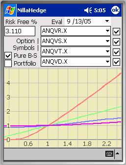
struck out-of-the-money at $17, ANQVS.X (implied ) struck slightly in-the-money at $18, ANQVT (implied ) struck at $19, and ANQVD.X (implied ) struck at $20, while AMAT has a market value of $17.83. Certainly, we’ve come to expect that out-of-the-money options exhibit higher volatility sensitivity, but since I mentioned them, the question you might really want to ask is “What’s up with ANQVD.X’s implied volatility?” The first thing of note is its extremely low vega = 0.0011, while its temporal brethren have vegas on the interval [1.78 .. 2.29), but perhaps more to the point, its delta = -1.0 and consequently its probability of closing in-the-money is 100%, meaning that other factor sensitivities, including volatility, are not particularly influential at the current stock price.One obvious conclusion you might draw from the foregoing discussion is that you should always have a good understanding of what you’re looking at in the Volatility-Value Explorer, but I hope the walk away benefit will be your recognition of the degree to which volatility can drive option value, so you won’t enter positions without assessing the risks and grappling with the model parameters beforehand.
Glossary
Black-Scholes Greeks & Elasticity
All of the variables used on the right hand sides below are defined in the glossary entry for the Black-Scholes value presented immediately after the greeks. The first derivative of the standardized cumulative Normal distribution, expressed as , occurs frequently below - it’s defined in a Glossary entry for the Normal distribution. In all cases, the values reported for the Black-Scholes greeks in NillaHedge are annual values. For simplicity’s sake, all of the expressions for the greeks below are based on a continuous dividend yield Black-Scholes model. However, the Option Analyzer relies primarily on a present value dividends model (not presented in the glossary entries below) and only falls back to the continuous model in situations where the present value model can’t be evaluated.
Delta
Delta measures the option’s sensitivity to the underlying
stock’s price. When the investment
objective is to hedge a stock position against risk, investors typically seek
to maintain what’s called a delta neutral position. That’s accomplished by selling  shares of the
underlying stock for each option you own.
Of course, as the stock price changes, it will rapidly become apparent
that this is a moving target, hence investor’s interest in gamma. See also:
Elasticity.
shares of the
underlying stock for each option you own.
Of course, as the stock price changes, it will rapidly become apparent
that this is a moving target, hence investor’s interest in gamma. See also:
Elasticity.
Calls: 
Puts: 
Elasticity
An option’s
elasticity is it’s delta scaled into the relevant currency, i.e. , where V is the
option’s market value and S is the underlying stock’s price. Elasticity indicates how much movement you
can expect in the option’s price given a change in the underlying stock’s
price, e.g. an option selling for $2.00 with  on an underlying stock
selling for $30 has elasticity,, so a 1% increase in the stock price will produce a 6 %
increase in the market value of a call (or a 6% decrease in the value of a
put).
on an underlying stock
selling for $30 has elasticity,, so a 1% increase in the stock price will produce a 6 %
increase in the market value of a call (or a 6% decrease in the value of a
put).
Gamma
Gamma measures the rate of change in delta with respect to the underlying stock’s price. If you want to maintain a delta neutral position in a given stock, an option with high gamma will have to be re-hedged more often than one with low gamma, thus potentially costing you more in transaction fees. Skilled hedge investors try to find a two or more options on the same underlying stock with counterbalancing gammas thereby constructing a (near) gamma neutral position which will minimize the need to re-hedge in response to movements in the stock price.
Rho
Rho(D) is the option’s price sensitivity to changes in the underlying stock’s dividends.
Calls: 
Puts: 
Rho(r)
Rho(r) is the option’s price sensitivity to changes in the risk free rate.
Calls: 
Puts:
Note:
Most systems don’t report  is probably the
equivalent of other systems’ rho.
is probably the
equivalent of other systems’ rho.
Theta
Theta measures the option’s price sensitivity with respect to the passage of time (t).
Calls: 
Puts: 
John Hull and Paul Wilmott each
give the expression above for theta, the first derivative of option value with
respect to time, and I concur. Please do
not be misled by Henry Tang’s derivation in:
http://www.quantnotes.com/fundamentals/options/thegreeks-theta.htm. Tang skips over a number of ‘trivial’ steps
in his derivation of theta for a vanilla call and loses track of the continuous
dividend yield discounting factor ( 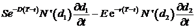 ) in the first term.
If you decide to embark on a derivation of your own, you’ll quickly find
that the last two terms fall straight out of the product rule, but you may
initially scratch your head on how to convert (for a call)
) in the first term.
If you decide to embark on a derivation of your own, you’ll quickly find
that the last two terms fall straight out of the product rule, but you may
initially scratch your head on how to convert (for a call)  . Don’t bother
differentiating
. Don’t bother
differentiating  and
and  , just knowing
, just knowing  is enough. Good luck!
is enough. Good luck!
Vega
Vega measures the option’s price sensitivity to changes in the underlying stock’s volatility.
Puts & Calls:
Black-Scholes Value
There are a number of formulae that express the Black-Scholes value for an option. Many commonly assume that there are no
dividends, so the term  , effectively making it disappear and simplifying the
expression for the Put and Call values.
The expression below is more accurate than tossing the dividends out the
window, but it’s not perfect because the continuous yield will attribute
dividend revenue to an underlying stock which may not necessarily occur before
the option’s expiration date. Real
option prices respond to actual dividends paid between the current time and the
option’s expiration date. NillaHedge usually discounts discrete dividend payments
expected before expiration rather than abstracting them as an annual rate, D as is shown in the expressions below.
, effectively making it disappear and simplifying the
expression for the Put and Call values.
The expression below is more accurate than tossing the dividends out the
window, but it’s not perfect because the continuous yield will attribute
dividend revenue to an underlying stock which may not necessarily occur before
the option’s expiration date. Real
option prices respond to actual dividends paid between the current time and the
option’s expiration date. NillaHedge usually discounts discrete dividend payments
expected before expiration rather than abstracting them as an annual rate, D as is shown in the expressions below.
The notable exception is the Time Decay Explorer which always uses a continuous yield model, for performance reasons. Given the low likelihood that you’d ever come across a discrete dividend version of Black-Scholes, we’ve only presented the continuous yield version. The following expressions are discussed in several books authored by Paul Wilmott, as well as one by John Hull, among others. Don’t be put off by the N(x) expression below - it’s just the standardized (zero mean with a standard deviation of one) cumulative Normal distribution, discussed later in the Glossary.
|
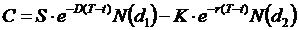
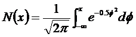 |
C := call value D := annualized dividend yield K := strike price P := put value r := risk free rate := stock volatility S := stock price t : = current date (years) T := maturity date (years) |
Convexity
Convexity is a function of the second derivative of a bond’s market value with respect to its yield, as shown in the box below.
|
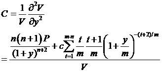 |
c := coupon amount C := convexity m := # of coupons per year n := years to maturity V := the bond’s market value y := yield to maturity |
Current Yield
Current yield is the ratio of a year’s worth of coupons to the current market price of the bond, expressed as a percentage.
Day Counting
30/360
In the
Actual/360
The Actual/360 day counting method is used for bank deposits and to calculate rates pegged to indices, e.g. LIBOR. The daily interest rate is 1/360 times the quoted annual rate. The number days per month is based on the actual number of calendar days during a given month (28, 29, 30 or 31). The number of days between February 25 and March 5 will be five in most years, and six in leap years.
Actual/Actual
Actual/Actual day counting is used for Treasury bonds and notes. The Actual/Actual day counting method is the most intuitive of the day counting schemes. Each year with 365 days has a daily rate equal to 1/365 times the quoted annual rate, while leap years have a daily rate equal to 1/366 times the quoted annual rate. The number of days per month is based on the actual number of calendar days in each given month (28, 29, 30 or 31). The number of days between February 25 and March 5 will be five in most years, and six in leap years.
Macaulay Duration
Macaulay duration was developed as a measure which puts coupon and non-coupon bonds on a comparable footing. Recall that all income for a zero-coupon bond is paid on the maturity date and the Macaulay duration of a zero-coupon bond is the number of years until it reaches maturity. Conversely, coupon bonds produce income prior to maturity. In order to compare zero-coupon and coupon bonds, Frederick Macaulay proposed accumulating the weighted (by time to maturity) future value (at maturity) of each coupon and the similarly weighted par value, thereby allowing a coupon bond to masquerade as a zero-coupon bond.
I believe that R. J.
Donohue’s An Introduction to Cashflow Analysis[10] is one source responsible for fostering the
occasional misconception that Macaulay duration is negative. Donohue starts with first
derivative of bond value with respect to yield and works backward ultimately
finding that Macaulay duration is negative. I beg to differ. Macaulay duration is a (scaled) time weighted
sum of discounted coupons and par value, with periodic yield , where m
represents the number of coupons per year.
There simply is no way that such a forward looking, time weighted sum
can produce a negative value. Modified
duration merely scales Macaulay duration by the periodic yield, so 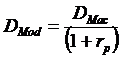 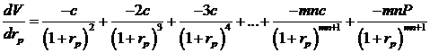
|
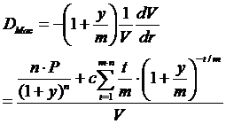 |
c := coupon amount m
:= # of coupons per year V := the bond’s market value y := yield to maturity |
Modified Duration
Modified duration essentially scales the Macaulay duration by its periodic yield. The practical application of modified duration is as a first order approximation of how the bond price will change as a function of its yield. In practice, you’d use to find the effect a yield change would have on the bond’s market value, but for accurate bond valuation, you should also consider convexity.
|
|
:= Macaulay duration := the periodic yield m := number of coupons per year V := the bond’s market value y := yield-to-maturity |
High duration positions (or portfolios) experience greater risk of loss than low duration positions do. Without considering the effect of convexity, a bond with a modified duration of four years will decline in value by four percent for a percentage point increase in interest rates. Analogously, longer duration bonds have increased risk of loss due to rate increases. See also: Convexity.
Normal Distribution
Assuming a standardized Normal distribution, the probability of an event occurring at or below x is given by:

The first derivative of the standardized cumulative Normal
distribution is the probability density function for a standardized Normal
distribution. The  , defined as:
, defined as:

Probability of Closing In The Money, p( ITM )
The probability of closing In The Money is an indication of the likelihood of that the option will expire with the stock price above the strike if the option is a call; or below the strike price if the option is a put. This probability is a natural outgrowth of Black-Scholes pricing theory, discussed below.
Calls: 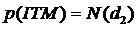
Puts: 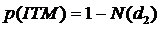
Volatility
Volatility - a measure of the amount by which stock returns have fluctuated (historical volatility) or are expected to fluctuate (expected volatility) during a period. The volatility of a stock is the standard deviation of the continuously compounded rates of return over a specified period. It’s equivalent to the standard deviation of the differences in the natural logarithms of the stock prices plus dividends, if any, over the period. Although the observation period may be less than a year or several years, by convention, volatility represents the standard deviation in the stock’s annual returns. The higher the volatility, the more you can expect returns on the stock to vary. Volatility is sometimes quoted as a percentage, but in NillaHedge, it’s not scaled up by 100. If you use volatility from a source that reports it as an annual percentage, be sure to scale it back down. An excellent source for volatility values (reported as percentages) is Robert's Historical Stock Volatilities.[11] An excerpt appears in the Resources section, near the end of the user manual.
Yield to Maturity
Yield to maturity is defined as the rate of interest that, when used to discount a bond’s tax flows, generates the bond’s current market price, i.e. it satisfies the following equation:
|
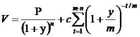 |
c := the coupon amount m := number of coupons per year n := years to maturity P := the par value V : = the bond’s market value y := yield to maturity |
This expression can be solved iteratively to find the yield to maturity, given a bond value.
Resources
Volatility Quotes
Robert's Historical Stock Volatilities – Robert’s will produce a report that looks something like the following table for Intel Corp. The link to Robert’s webpage is: http://www.intrepid.com/~robertl/stock-vols1.html.
|
Ticker |
1 Month |
2 Month |
3 Month |
6 Month |
9 Month |
1 Year |
2 Year |
3 Year |
4 Year |
5 Year |
|
INTC |
32.03% |
27.95% |
28.32% |
33.74% |
30.90% |
30.67% |
34.13% |
46.46% |
51.06% |
62.57% |
Obviously, there are many possible answers for a given stock’s volatility, depending on your observation window. The situation is complicated by the fact that options typically incorporate investor’s beliefs about the underlying stock’s expected volatility. If you believe that a stock’s returns will be less volatile than they have been historically, then the value of options on that underlying stock will be consequently less valuable. You can get a sense for what other investors believe the stock’s expected volatility will be by looking at the volatility implied by current option prices on that stock. Even there, beware that implied volatility is generally not constant across all strike prices and expiration dates - you must still use your own judgment to interpret the implied volatilities observed.
References
[Fabozzi] Bond Markets, Analysis and Strategies, 5th
Edition
Frank J. Fabozzi. 2003 Pearson Prentice Hall.
Fabozzi’s book is a (if not the) definitive reference on bonds. There are plenty of examples and discussion on duration, convexity, strips, callable and convertible bonds, mortgage-backed securities, bond markets, swaps, futures, etc. There are some minor typos, but the intent is usually obvious. Without qualification, I much prefer Fabozzi’s approach to the math. In particular, his presentation of pricing under changing yield conditions (duration, convexity, etc.) is superior to Farrell’s or anybody else I’ve read so far.
[Farrell]
Portfolio Management, Theory and Application, 2nd Edition
James L Farrell, Jr. 1997 McGraw-Hill Companies, Inc.
Farrell doesn’t provide as many formulas (thus leaving himself less exposed to errors) or revisit them in as many ways as Fabozzi does, but this book has the advantage of covering portfolio theory and working valuation models at a lower level than you’ll typically find in a book on portfolio management, so it’s a nice overall introduction to the subject matter for the uninitiated. It’s also a nice complement to Hull’s book, which doesn’t venture into portfolio theory, but if you’d rather pass on that and focus on on yield curves, strips, and other fixed income issues, you’re better off moving up to Fabozzi.
[
John C. Hull. 2002 Prentice Hall
This is an excellent reference on
everything from interest rate markets, credit risk, hedging strategies, Black-Scholes theory, the greeks,
volatility smiles, etc.
[Wilmott] Paul Wilmott Introduces Quantitative Finance
Paul Wilmott. 2001 John Wiley & Sons, Ltd.
Wilmott
has written various books in the computational finance arena, one being a
two-volume set (a greatly expanded version of this text), but in this
particular text Wilmott and